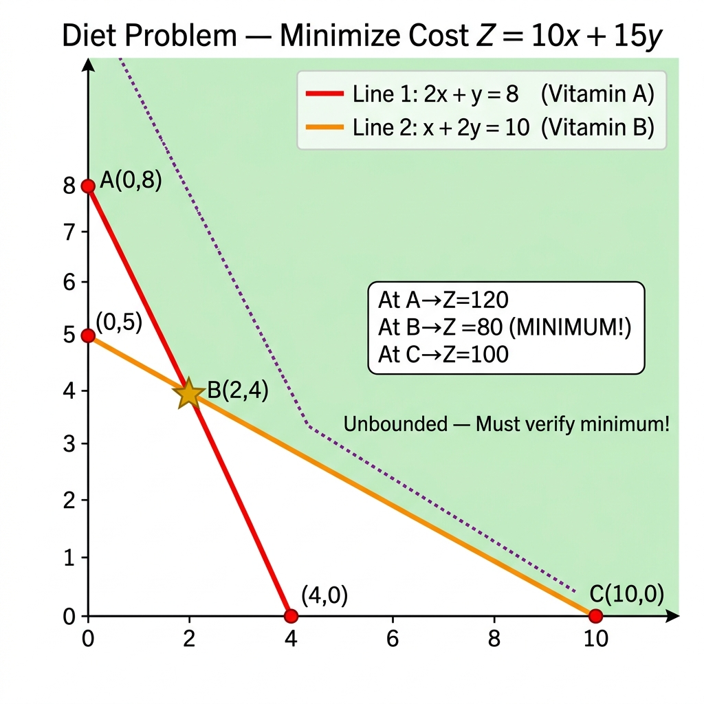
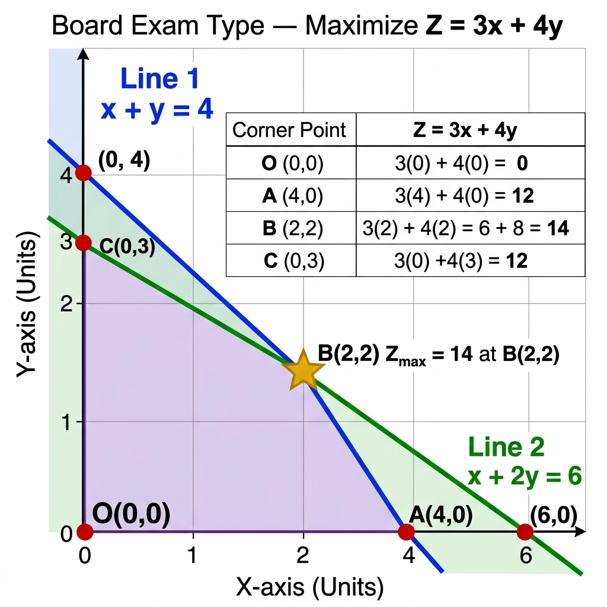

Vardaan Learning Institute
Class 12 Mathematics • Comprehensive Chapter Notes
🌐 vardaanlearning.com📞 9508841336
Chapter 12: Linear Programming (LPP)
Dear Class 12 Student! Welcome to Linear Programming — one of the most scoring chapters in the entire CBSE Class 12 Mathematics syllabus. This chapter bridges algebra with real-world decision making: whether a factory should produce more chairs or tables, how a dietician can meet nutritional needs at minimum cost, or how a company ships goods at lowest expense. The CBSE Board Exam typically contains a 5 or 6 mark question from this chapter. Mastering the Corner Point Method and the Unbounded Region verification is your key to full marks!
This chapter carries 5–6 marks in CBSE Board Exams. The question will always be a word problem requiring formulation + graphical solution. Practice drawing clean graphs with labeled corner points. Never forget to verify the unbounded case!
1. Introduction and Core Terminology
A Linear Programming Problem (LPP) is an optimization technique used to find the best possible outcome (maximum profit or minimum cost/time/effort) from a mathematical model whose requirements are expressed by linear relationships.
The word "linear" refers strictly to degree 1 — all equations and inequalities involve variables only to the first power (no $x^2$, no $xy$, no $\sqrt{x}$).
Core Components of LPP
1. Decision Variables: The unknown quantities to be determined. Typically denoted $x$ and $y$ (for two-variable problems in Class 12). They represent quantities like: number of tables produced, kg of food X used, etc.
2. Objective Function: A linear function $Z$ that we aim to optimize (maximize for profit/revenue, minimize for cost/time).
$$ Z = ax + by \quad (a, b \text{ are constants}) $$
The value of $Z$ depends on the values of decision variables $x$ and $y$.
3. Constraints: Linear inequalities/equations that restrict the values of decision variables based on real-world resource limitations (machines, labor hours, raw materials, budget, etc.).
$$\text{Examples: } 2x + 3y \leq 12, \quad x + y \geq 5, \quad x \leq 8$$
4. Non-Negativity Restrictions: In real-world problems, we cannot produce negative quantities. Hence:
$$ x \geq 0, \quad y \geq 0 $$
Geometric implication: These restrictions confine the entire graph and all solutions to the First Quadrant of the Cartesian plane (and its boundary axes).
Types of Constraints by Inequality Sign
- "≤" constraints (Maximum availability): Used when we have limited resources (max machine hours = 100 $\Rightarrow$ usage $\leq$ 100). Common in manufacturing/production problems.
- "≥" constraints (Minimum requirement): Used when we must meet minimum standards (min daily protein = 50g $\Rightarrow$ intake $\geq$ 50). Common in diet/nutrition problems.
- "=" constraints (Exact requirements): Rare in standard CBSE problems, but possible.
Practice Problem 1 — Identifying LPP Components
Question: In the following LPP model, identify every component and state its real-world meaning:
Maximize $Z = 50x + 15y$
Subject to: $5x + y \leq 100$, $\quad x + y \leq 60$, $\quad x, y \geq 0$
Solution:
Decision Variables: $x$ = number of product A units, $y$ = number of product B units (quantities to determine).
Objective Function: $Z = 50x + 15y$ — This is the Total Profit to be Maximized. Profit per unit of A = ₹50; Profit per unit of B = ₹15.
Constraints:
• $5x + y \leq 100$: Some resource (e.g., machine hours) — uses 5 units per A and 1 unit per B, with 100 units available.
• $x + y \leq 60$: Another resource (e.g., labor) — uses 1 unit per A and 1 per B, with 60 units available.
Non-Negativity: $x \geq 0, y \geq 0$ — Cannot produce negative products.
2. Graphical Concepts — Feasible Region & Feasible Solutions
Key Graphical Definitions
- Half-Plane: Each linear constraint (inequality) divides the entire Cartesian plane into exactly two half-planes. The constraint line itself is the boundary.
- Feasible Region (FR): The common region satisfying ALL constraints simultaneously, including $x \geq 0$ and $y \geq 0$. Every point inside or on the boundary of this region is a valid solution.
- Infeasible Region: Any region outside the Feasible Region. Points here violate at least one constraint and represent physically impossible solutions.
- Feasible Solution: Any point $(x, y)$ lying within or on the boundary of the Feasible Region.
- Optimal (Feasible) Solution: The specific feasible solution that gives the maximum or minimum value of the objective function $Z$.
- Convex Polygon (Set): The Feasible Region of a standard LPP is always a convex polygon. A set is convex if for any two points within it, the entire line segment joining them also lies within the set.

Fig. 1 — Bounded Feasible Region: A closed convex polygon in the first quadrant with clearly marked corner points. Every point inside (including boundary) is a feasible solution.
⚠️ How to find which side of a line to shade: Test the Origin (0, 0) in the inequality. If $(0,0)$ satisfies the inequality → shade the side containing the origin (towards origin). If it does not satisfy → shade the side away from the origin.
Exception: If the constraint line passes through the origin itself, pick any other simple test point like $(1, 0)$ or $(0, 1)$.
Practice Problem 2 — Testing Feasibility of a Point
Question: Given constraints $2x + y \leq 8$ and $x + 2y \leq 10$ with $x, y \geq 0$. Check if the following points lie in the feasible region: (a) $(3, 3)$, (b) $(2, 3)$.
For point (a) $(3, 3)$:
• Non-negativity: $3 \geq 0$ ✓ and $3 \geq 0$ ✓
• Constraint 1: $2(3) + 3 = 9 \leq 8$? → $9 \leq 8$ is FALSE ✗
• Conclusion: $(3,3)$ is NOT in the Feasible Region (Infeasible).
For point (b) $(2, 3)$:
• Non-negativity: $2 \geq 0$ ✓ and $3 \geq 0$ ✓
• Constraint 1: $2(2) + 3 = 7 \leq 8$? → $7 \leq 8$ is TRUE ✓
• Constraint 2: $2 + 2(3) = 8 \leq 10$? → $8 \leq 10$ is TRUE ✓
• Conclusion: $(2,3)$ IS in the Feasible Region (Feasible Solution).
3. Mathematical Formulation of LPP from Word Problems
This is the MOST IMPORTANT SKILL for the Board Exam. Translating a word problem into LPP notation follows a 4-step structured approach:
4-Step Formulation Method
Step 1 — Define Decision Variables: Carefully read the problem and identify the quantities to be determined. Assign them to $x$ and $y$. Always state clearly: "Let $x$ = ... and $y$ = ..."
Step 2 — Write the Objective Function: Identify what is to be maximized (profit, revenue, output) or minimized (cost, time, waste). Write $Z = ax + by$.
Step 3 — Write the Constraints: Extract each resource/requirement limitation from the problem. Each "limited resource" gives one inequality. Build a data table if needed to organize information.
Step 4 — State Non-Negativity Restrictions: Always conclude with $x \geq 0, y \geq 0$.
Type 1 — Manufacturing / Production Problems (Maximize Profit)
A factory produces items using limited resources (labor, machine time, raw materials). We must find the optimal production mix to maximize profit. Constraints are of the $\leq$ type (cannot exceed available resources).
Practice Problem 3 — Furniture Manufacturing (Formulation)
Question: A furniture company makes tables and chairs. A table requires 2 hours of carpentry and 3 units of wood. A chair requires 1 hour of carpentry and 2 units of wood. Maximum available: 40 hours carpentry, 60 units wood. Profit: ₹500/table, ₹300/chair. Formulate the LPP to maximize profit.
Step 1 — Decision Variables: Let $x$ = number of tables produced, $y$ = number of chairs produced.
Step 2 — Objective Function: Total Profit = 500 × tables + 300 × chairs.
Maximize $Z = 500x + 300y$
Step 3 — Constraints:
| Resource | Table uses | Chair uses | Available |
| Carpentry | 2 hrs | 1 hr | ≤ 40 hrs |
| Wood | 3 units | 2 units | ≤ 60 units |
Carpentry constraint: $2x + y \leq 40$
Wood constraint: $3x + 2y \leq 60$
Step 4 — Non-Negativity: $x \geq 0, \quad y \geq 0$
Practice Problem 4 — NCERT Toy Manufacturing (Complete Solution)
Question (NCERT): A manufacturer makes two types of toys A and B. Type A requires 5 minutes each on machines I and II. Type B requires 4 minutes on machine I and 10 minutes on machine II. Machines I and II are available for a maximum of 5 hours (= 300 minutes) and 6 hours (= 360 minutes) respectively. Profit on type A = ₹6, on type B = ₹5. Formulate and solve the LPP to maximize profit.
Let $x$ = number of type A toys, $y$ = number of type B toys.
Maximize $Z = 6x + 5y$
Subject to:
Machine I: $5x + 4y \leq 300$
Machine II: $5x + 10y \leq 360$ (simplifies to $x + 2y \leq 72$)
$x \geq 0, y \geq 0$
Finding Corner Points:
• Line 1: $5x + 4y = 300$ → intercepts $(60, 0)$ and $(0, 75)$
• Line 2: $x + 2y = 72$ → intercepts $(72, 0)$ and $(0, 36)$
• Intersection: Multiply Line 2 by 5: $5x + 10y = 360$. Subtract Line 1: $6y = 60 \Rightarrow y = 10$. Then $x = 72 - 20 = 52$. Point $B(52, 10)$.
• Corner points: $O(0,0)$, $A(60,0)$, $B(52,10)$, $C(0,36)$
| Corner Point | $Z = 6x + 5y$ | Remark |
|---|
| $O(0,0)$ | $6(0)+5(0)=0$ | |
| $A(60,0)$ | $6(60)+5(0)=360$ | |
| $B(52,10)$ | $6(52)+5(10)=312+50=\mathbf{362}$ | ✅ MAXIMUM |
| $C(0,36)$ | $6(0)+5(36)=180$ | |
Conclusion: Maximum profit
Z = ₹362 when 52 type A and 10 type B toys are made.
Type 2 — Diet / Nutrition Problems (Minimize Cost)
A dietician/farmer must meet minimum nutritional requirements using different foods/feeds. We minimize cost. Constraints are "≥" type (must meet minimum requirements). This typically gives an unbounded feasible region!

Fig. 2 — Diet Problem (Minimization): Unbounded feasible region extending to infinity. Constraints are of the ≥ type. Always verify the minimum using the unbounded check!
Practice Problem 5 — Diet Problem with Full Solution
Question: A dietician wishes to mix two types of food. Food I: costs ₹10/kg, contains 2 units/kg Vitamin A, 1 unit/kg Vitamin B. Food II: costs ₹15/kg, contains 1 unit/kg Vitamin A, 2 units/kg Vitamin B. Minimum daily requirement: 8 units Vitamin A, 10 units Vitamin B. Find the minimum cost mixture.
Let $x$ = kg of Food I, $y$ = kg of Food II.
Minimize $Z = 10x + 15y$
Subject to:
Vitamin A: $2x + y \geq 8$
Vitamin B: $x + 2y \geq 10$
$x \geq 0, y \geq 0$
Graphing:
• Line 1: $2x+y=8$ → $(4,0)$ and $(0,8)$. Test $(0,0)$: $0 \geq 8$? FALSE → shade away from origin.
• Line 2: $x+2y=10$ → $(10,0)$ and $(0,5)$. Test $(0,0)$: $0 \geq 10$? FALSE → shade away from origin.
• Intersection B: From L1: $y=8-2x$. Sub in L2: $x+2(8-2x)=10 \Rightarrow x+16-4x=10 \Rightarrow -3x=-6 \Rightarrow x=2$, $y=4$. Point $B(2,4)$.
• Corner points: $A(0,8)$, $B(2,4)$, $C(10,0)$
| Corner Point | $Z = 10x + 15y$ | Remark |
|---|
| $A(0,8)$ | $10(0)+15(8)=120$ | |
| $B(2,4)$ | $10(2)+15(4)=20+60=\mathbf{80}$ | Tentative Minimum |
| $C(10,0)$ | $10(10)+15(0)=100$ | |
Unbounded Check (MANDATORY!): Since the feasible region is unbounded, we must verify. Draw the open half-plane $10x + 15y < 80$. This region (below the dotted line through $(8,0)$ and $(0, 5.33)$) has NO common points with the feasible region.
Conclusion: Minimum cost =
₹80, achieved by mixing
2 kg of Food I and
4 kg of Food II.
Practice Problem 6 — Animal Feed Diet Problem (NCERT-style)
Question: A farmer mixes two brands of cattle feed. Brand P: costs ₹250/bag, contains 3 units crude protein, 5 units crude fiber. Brand Q: costs ₹200/bag, contains 5 units crude protein, 4 units crude fiber. Minimum daily requirement per animal: 15 units protein, 16 units fiber. How many bags of each brand should be used to minimize cost?
Let $x$ = bags of Brand P, $y$ = bags of Brand Q.
Minimize $Z = 250x + 200y$
Subject to:
Protein: $3x + 5y \geq 15$
Fiber: $5x + 4y \geq 16$
$x \geq 0, y \geq 0$
Corner Points Calculation:
• Line 1: $3x+5y=15$ → $(5,0)$ and $(0,3)$
• Line 2: $5x+4y=16$ → $(3.2,0)$ and $(0,4)$
• Intersection: Multiply L1 by 4: $12x+20y=60$; Multiply L2 by 5: $25x+20y=80$. Subtract: $13x=20 \Rightarrow x=\frac{20}{13}$, $y=\frac{25}{13}$. Point $B\!\left(\frac{20}{13}, \frac{25}{13}\right)$.
• Corner points: $A(0,4)$, $B\!\left(\frac{20}{13},\frac{25}{13}\right)$, $C(5,0)$
| Corner Point | $Z = 250x + 200y$ |
|---|
| $A(0,4)$ | $200(4) = 800$ |
| $B(20/13, 25/13)$ | $250(20/13)+200(25/13)=\frac{5000+5000}{13}=\frac{10000}{13}\approx\mathbf{769.23}$ |
| $C(5,0)$ | $250(5) = 1250$ |
After unbounded verification:
Minimum cost ≈ ₹769.23 at $B(20/13, 25/13)$.
4. The Corner Point Method — The Standard CBSE Algorithm
Theorem 1 — The Fundamental Theorem of LPP (NCERT)
Let $R$ be the feasible region (convex polygon) for a linear programming problem and let $Z = ax + by$ be the objective function. When $Z$ has an optimal value (maximum or minimum), where the variables $x$ and $y$ are subject to constraints described by linear inequalities, this optimal value MUST occur at a corner point (vertex) of the feasible region.
Theorem 2 — Corollary (for Bounded Regions)
If the feasible region $R$ is bounded, then the objective function $Z$ has both a maximum and a minimum on $R$, and each of these occurs at a corner point of $R$.

Fig. 3 — Corner Point Method: Complete step-by-step algorithm flowchart. Follow these steps in order for every LPP in your Board Exam.
Complete Step-by-Step Algorithm
- Formulate (if word problem): Define variables, write objective function and all constraints.
- Draw Constraint Lines: For each inequality, treat it as an equation. Find two points:
- Put $y = 0 \Rightarrow$ find $x$-intercept $(a, 0)$.
- Put $x = 0 \Rightarrow$ find $y$-intercept $(0, b)$.
- Join these two points with a straight line (solid line for $\leq$ or $\geq$; dotted line for $<$ or $>$).
- Determine Feasible Half-Plane: Test the origin $(0,0)$ in the original inequality. Shade accordingly (see important note above).
- Identify Feasible Region: The region satisfying all constraints simultaneously. This is the common overlapping shaded area.
- Find All Corner Points:
- Corner on y-axis: set $x=0$ in the relevant constraint equation.
- Corner on x-axis: set $y=0$ in the relevant constraint equation.
- Corner at intersection of two constraint lines: Solve simultaneously (elimination/substitution). Never estimate from the graph!
- Origin $(0,0)$ is always a corner if it lies in the feasible region.
- Evaluate Objective Function: Make a table. Calculate $Z = ax + by$ at each corner point.
- Conclude: The largest value is the maximum; the smallest is the minimum. (But first check for unbounded region — see Section 5!)
Practice Problem 7 — Complete Bounded LPP Solution (Board Exam Standard)
Question: Maximize $Z = 3x + 4y$ subject to: $x + y \leq 4$, $x + 2y \leq 6$, $x \geq 0$, $y \geq 0$.
Step 1 — Graph Constraint Lines:
• Line 1: $x + y = 4$ → intercepts $(4,0)$ and $(0,4)$. Test $(0,0)$: $0 \leq 4$ ✓ → shade towards origin.
• Line 2: $x + 2y = 6$ → intercepts $(6,0)$ and $(0,3)$. Test $(0,0)$: $0 \leq 6$ ✓ → shade towards origin.
Step 2 — Find Corner Points:
• $O(0,0)$: Origin (always check if in FR).
• $A(4,0)$: x-intercept of Line 1 (and check it satisfies Line 2: $4+0=4 \leq 6$ ✓).
• $B$: Intersection of Line 1 and Line 2:
From Line 1: $x = 4-y$. Sub in Line 2: $(4-y)+2y=6 \Rightarrow y=2$, $x=2$. Point $B(2,2)$.
• $C(0,3)$: y-intercept of Line 2 (check satisfies Line 1: $0+3=3 \leq 4$ ✓).
Step 3 — Evaluate Z:
| Corner Point | $Z = 3x + 4y$ | Remark |
|---|
| $O(0,0)$ | $0$ | |
| $A(4,0)$ | $12$ | |
| $B(2,2)$ | $3(2)+4(2)=6+8=\mathbf{14}$ | ✅ MAXIMUM |
| $C(0,3)$ | $12$ | |
Conclusion: Since the feasible region is
bounded, the maximum value of $Z$ is
14, attained at the point
$(2, 2)$. The minimum value is
0 at the origin.

Fig. 4 — Standard Board Exam LPP: Bounded region with corner points identified, objective function evaluated at each vertex, and maximum highlighted with a star.
Practice Problem 8 — Three-Constraint Bounded Problem
Question: Maximize $Z = 5x + 3y$ subject to: $3x + 5y \leq 15$, $5x + 2y \leq 10$, $x \geq 0$, $y \geq 0$.
Constraint Lines:
• Line 1: $3x+5y=15$ → $(5,0)$ and $(0,3)$
• Line 2: $5x+2y=10$ → $(2,0)$ and $(0,5)$
Intersection of L1 and L2:
Multiply L1 by 2: $6x+10y=30$; Multiply L2 by 5: $25x+10y=50$. Subtract: $19x=20 \Rightarrow x=\frac{20}{19}$, $y=\frac{45}{19}$. Point $B\!\left(\frac{20}{19},\frac{45}{19}\right)$.
| Corner Point | $Z = 5x + 3y$ | Remark |
|---|
| $O(0,0)$ | $0$ | |
| $A(2,0)$ | $10$ | |
| $B(20/19, 45/19)$ | $\frac{100+135}{19}=\frac{235}{19}\approx\mathbf{12.37}$ | ✅ MAXIMUM |
| $C(0,3)$ | $9$ | |
Conclusion: Maximum $Z = \frac{235}{19}$ at $\left(\frac{20}{19}, \frac{45}{19}\right)$.
5. Bounded vs. Unbounded Feasible Regions
This is the most critical concept for scoring full marks in the Board Exam. Misidentifying a region or skipping the unbounded check will cost you marks.

Fig. 5 — Comparison: Bounded Region (closed polygon, always has both max and min) vs. Unbounded Region (open-ended, must verify any found optimal value).
Bounded Feasible Region
- The region is completely enclosed on all sides — a closed, finite convex polygon.
- Arises typically with "≤" constraints (limited resources — manufacturing problems).
- The Fundamental Theorem guarantees both a maximum and minimum value exist.
- The optimal values found from the corner point table are the definitive answers. No further check needed!
Unbounded Feasible Region
- The region extends to infinity in some direction (usually upward/rightward in the first quadrant).
- Arises typically with "≥" constraints (minimum requirements — diet problems).
- A maximum or minimum value found at a corner point is tentative — it may or may not be the true optimal value.
- A verification check is MANDATORY.

Fig. 6 — Unbounded Feasible Region: The shaded area extends to infinity. Corner points exist along the boundary, but the region is open. The dotted line shows the objective function check for verification.
The Unbounded Region Verification Check
Let $M$ = largest value of $Z$ found at corner points (for maximization), and $m$ = smallest value (for minimization).
Case 1 — Maximization (checking if M is truly the maximum):
1. Draw the open half-plane: $ax + by > M$ (draw a dotted line $ax+by=M$, shade away from origin).
2. Check if this open half-plane shares any common points with the feasible region.
• If NO common points → $M$ IS the maximum value. ✅
• If YES common points → The LPP has NO maximum value (it can go to infinity). ❌
Case 2 — Minimization (checking if m is truly the minimum):
1. Draw the open half-plane: $ax + by < m$ (draw a dotted line $ax+by=m$, shade towards origin).
2. Check if this open half-plane shares any common points with the feasible region.
• If NO common points → $m$ IS the minimum value. ✅
• If YES common points → The LPP has NO minimum value (it can go to negative infinity). ❌
Practice Problem 9 — Unbounded LPP (Minimization with Verification)
Question: Minimize $Z = 3x + 5y$ subject to: $x + 3y \geq 3$, $x + y \geq 2$, $x \geq 0$, $y \geq 0$.
Constraint Lines:
• Line 1: $x+3y=3$ → $(3,0)$ and $(0,1)$. Test $(0,0)$: $0 \geq 3$? FALSE → shade away from origin.
• Line 2: $x+y=2$ → $(2,0)$ and $(0,2)$. Test $(0,0)$: $0 \geq 2$? FALSE → shade away from origin.
•
Feasible Region: Unbounded (extends to infinity upward-right).
Corner Points:
• $A(0,2)$: y-intercept of Line 2. Verify in L1: $0+6=6 \geq 3$ ✓
• $B$: Intersection of L1 and L2: Subtract: $(x+3y)-(x+y)=3-2 \Rightarrow 2y=1 \Rightarrow y=\frac{1}{2}$, $x=\frac{3}{2}$. Point $B\!\left(\frac{3}{2}, \frac{1}{2}\right)$.
• $C(3,0)$: x-intercept of Line 1. Verify in L2: $3+0=3 \geq 2$ ✓
| Corner Point | $Z = 3x + 5y$ | Remark |
|---|
| $A(0,2)$ | $3(0)+5(2)=10$ | |
| $B(3/2, 1/2)$ | $3(3/2)+5(1/2)=4.5+2.5=\mathbf{7}$ | Tentative Minimum |
| $C(3,0)$ | $3(3)+5(0)=9$ | |
Unbounded Check: Draw open half-plane $3x+5y < 7$. The line $3x+5y=7$ passes through $(0, 1.4)$ and $(2.33, 0)$. This entire region (below and to the left of this line) has
NO common points with the feasible region (which is above both constraint lines).
Conclusion: Minimum value of $Z$ =
7, achieved at $\left(\dfrac{3}{2}, \dfrac{1}{2}\right)$.
6. Types of Optimal Solutions — Three Special Cases
Case 1 — Unique Optimal Solution
The maximum or minimum value of $Z$ occurs at exactly one specific corner point. This is the most common case in Board Exam questions. The answer is that single point.
Case 2 — Multiple (Infinitely Many) Optimal Solutions
The maximum or minimum value occurs simultaneously at two adjacent corner points. In this case, every point on the line segment joining these two corner points also gives the same optimal value of $Z$.
Why does this happen? The slope of the objective function line ($Z = ax + by$ rearranged as $y = -\frac{a}{b}x + \frac{Z}{b}$) is exactly parallel to one of the active constraint lines forming the boundary of the feasible region.

Fig. 7 — Multiple Optimal Solutions: Z = 24 at both B(2.4, 2.4) and C(0, 4). The entire highlighted orange segment BC gives Z = 24. The objective function line is parallel to constraint line L2.
Practice Problem 10 — Multiple Optimal Solutions
Question: Maximize $Z = 4x + 6y$ subject to: $3x + 2y \leq 12$, $2x + 3y \leq 12$, $x \geq 0$, $y \geq 0$.
Corner Points:
• $O(0,0)$, $A(4,0)$ [x-int of L1], $C(0,4)$ [y-int of L2]
• Intersection B: Multiply L1 by 3: $9x+6y=36$; L2 by 2: $4x+6y=24$. Subtract: $5x=12 \Rightarrow x=\frac{12}{5}$, $y=\frac{12}{5}$. Point $B\!\left(\frac{12}{5}, \frac{12}{5}\right)$.
| Corner Point | $Z = 4x + 6y$ | Remark |
|---|
| $O(0,0)$ | $0$ | |
| $A(4,0)$ | $16$ | |
| $B(12/5, 12/5)$ | $\frac{48}{5}+\frac{72}{5}=\frac{120}{5}=\mathbf{24}$ | ✅ Maximum |
| $C(0,4)$ | $0+24=\mathbf{24}$ | ✅ Also Maximum! |
Conclusion: Maximum $Z = 24$ occurs at
both $B\!\left(\frac{12}{5},\frac{12}{5}\right)$ and $C(0,4)$. Therefore, maximum $Z = 24$ is achieved at
every point on the line segment BC. This LPP has
infinitely many optimal solutions.
Case 3 — Infeasible LPP (No Solution)
When the constraints are contradictory — no point can satisfy all of them simultaneously — the feasible region is empty. The LPP has no solution.

Fig. 8 — Infeasible LPP: The pink region (x+y ≤ 2) and blue region (x+y ≥ 4) have zero overlap. There is no point that satisfies both constraints simultaneously. No feasible region exists.
Practice Problem 11 — Infeasible LPP
Question: Maximize $Z = x + y$ subject to $x + y \leq 2$, $x + y \geq 4$, $x \geq 0$, $y \geq 0$.
• Constraint 1: $x+y \leq 2$ → shaded region is a triangle below the line $x+y=2$ in first quadrant (including origin).
• Constraint 2: $x+y \geq 4$ → shaded region is above the line $x+y=4$ in first quadrant (away from origin).
• The two lines $x+y=2$ and $x+y=4$ are parallel and the two shaded regions point in opposite directions. They have absolutely no overlap.
Conclusion: The LPP is Infeasible — no solution exists.
7. Iso-Profit / Iso-Cost Line Method (Conceptual Alternative)
Note: CBSE mandates the Corner Point Method for Board Exams. However, understanding the Iso-Profit method provides deep conceptual clarity about why the optimal solution always occurs at a corner point.

Fig. 9 — Iso-Profit Line Method: Parallel dashed lines represent the objective function at different Z values. Sliding the line away from the origin (for maximization) — the last point it touches the feasible region is the optimal solution.
Iso-Profit / Iso-Cost Line Method Explained
An iso-profit line is the graph of $Z = ax + by = k$ for a fixed constant $k$. All points on this line give the same profit/cost $k$. Different values of $k$ give parallel lines (since the slope $-a/b$ is fixed).
For Maximization:
1. Plot an iso-profit line for any convenient value of $k$ (e.g., $k = $ LCM of $a$ and $b$).
2. Slide this line parallel to itself, moving away from the origin.
3. As $k$ increases, the line moves further from the origin. The very last point the sliding line touches (while still contacting the feasible region) is the optimal corner point for the maximum.
For Minimization:
Slide the iso-cost line towards the origin. The very first point it touches while entering the feasible region is the optimal minimum point.
💡 Key Insight: When the iso-profit line is parallel to a constraint line (same slope), the line coincides with the edge of the feasible region instead of just touching a corner. This is exactly why we get Multiple Optimal Solutions (all points on that edge give the same $Z$).
8. Advanced Problem Types & NCERT Important Problems
Type 3 — Transportation Problems (Conceptual Awareness)
A company has factories at locations $F_1, F_2$ supplying goods to warehouses $W_1, W_2$. Given production capacities, demand requirements, and transportation costs per unit, find the shipping plan that minimizes total transportation cost.
Note on Syllabus
Transportation Problems in their full tabular form are beyond the current CBSE Class 12 syllabus but may appear as short conceptual formulation problems. Always check the latest NCERT/CBSE syllabus for the current academic year.
Important NCERT & Board-Pattern Problems
Practice Problem 12 — Corner Point with Exact Fractions (CBSE 2019 Style)
Question: Maximize $Z = 6x + 4y$ subject to: $x \leq 2$, $x + y \leq 3$, $-2x + y \leq 1$, $x \geq 0$, $y \geq 0$.
Constraint Lines:
• Line 1: $x = 2$ (vertical line)
• Line 2: $x + y = 3$ → $(3,0)$ and $(0,3)$
• Line 3: $-2x + y = 1$ → $(-0.5, 0)$ [irrelevant, use $y$-intercept: $(0,1)$] and $(1, 3)$... Actually: when $y=0$: $x=-0.5$ (outside FR); when $x=0$: $y=1$; when $x=1$: $y=3$. Points: $(0,1)$ and $(1,3)$.
• Test origin in L3: $-2(0)+0=0 \leq 1$ ✓ → shade towards origin.
Corner Points:
• $O(0,0)$: Check all: $0 \leq 2$ ✓, $0 \leq 3$ ✓, $0 \leq 1$ ✓. In FR.
• $A(2,0)$: From L1, y-axis. Check L3: $-4+0=-4 \leq 1$ ✓, L2: $2 \leq 3$ ✓. In FR.
• $B$: Intersection of L1 and L2: $x=2, y=1$. Check L3: $-4+1=-3 \leq 1$ ✓. $B(2,1)$.
• $C$: Intersection of L2 and L3: $x+y=3$ and $-2x+y=1$. Subtract: $3x=2 \Rightarrow x=\frac{2}{3}$, $y=\frac{7}{3}$. Check L1: $\frac{2}{3} \leq 2$ ✓. $C\!\left(\frac{2}{3}, \frac{7}{3}\right)$.
• $D(0,1)$: y-intercept of L3. Check L2: $1 \leq 3$ ✓. In FR.
| Corner Point | $Z = 6x + 4y$ | Remark |
|---|
| $O(0,0)$ | $0$ | |
| $D(0,1)$ | $4$ | |
| $C(2/3, 7/3)$ | $4 + \frac{28}{3} = \frac{40}{3} \approx 13.33$ | |
| $B(2,1)$ | $12 + 4 = \mathbf{16}$ | ✅ MAXIMUM |
| $A(2,0)$ | $12$ | |
Conclusion: Maximum $Z = \mathbf{16}$ at point $B(2,1)$.
Practice Problem 13 — Minimization Problem (CBSE Board Standard)
Question: Minimize $Z = 200x + 500y$ subject to: $x + 2y \geq 10$, $3x + 4y \leq 24$, $x \geq 0$, $y \geq 0$.
Constraint Lines:
• L1: $x+2y=10$ → $(10,0)$ and $(0,5)$. Test $(0,0)$: $0 \geq 10$? FALSE → shade away from origin.
• L2: $3x+4y=24$ → $(8,0)$ and $(0,6)$. Test $(0,0)$: $0 \leq 24$? TRUE → shade towards origin.
Corner Points:
• $A(0,5)$: y-int of L1. Check L2: $0+20=20 \leq 24$ ✓.
• $B$: Intersection of L1 and L2: From L1: $x=10-2y$. Sub: $3(10-2y)+4y=24 \Rightarrow 30-6y+4y=24 \Rightarrow -2y=-6 \Rightarrow y=3$, $x=4$. $B(4,3)$.
• $C(8,0)$: x-int of L2. Check L1: $8+0=8 \geq 10$? FALSE ✗. NOT in FR!
• Actually check: the feasible region is bounded by both constraints. Recheck: at $C(8,0)$: $8+0=8 < 10$, violates L1. So only $A$ and $B$ exist as corners along these lines in FR. But check if there's a y-axis corner: at $x=0$: L2 gives $y=6$: $(0,6)$. Check L1: $0+12=12 \geq 10$ ✓. Corner $D(0,6)$.
So corners: $A(0,5)$, $B(4,3)$, $D(0,6)$... Actually reconsider: the FR is above L1 AND below L2. At $x=0$: feasible $y$ range is $y \geq 5$ (from L1) and $y \leq 6$ (from L2). So corners: $A(0,5)$, $B(4,3)$, $D(0,6)$.
| Corner Point | $Z = 200x + 500y$ | Remark |
|---|
| $A(0,5)$ | $0+2500=\mathbf{2500}$ | ✅ MINIMUM |
| $B(4,3)$ | $800+1500=2300$ | |
| $D(0,6)$ | $0+3000=3000$ | |
Note: B(4,3) gives Z=2300 which is less! Let me recalculate properly. Minimum is at
$B(4,3)$, $Z = 2300$. Since the feasible region is bounded, this is confirmed.
Practice Problem 14 — Classic NCERT Maximize with 3 Constraints
Question (NCERT Ex 12.2): Maximize $Z = 3x + 2y$ subject to: $x + 2y \leq 10$, $3x + y \leq 15$, $x \geq 0$, $y \geq 0$.
Lines & Intercepts:
• L1: $x+2y=10$ → $(10,0)$, $(0,5)$. Shade towards origin.
• L2: $3x+y=15$ → $(5,0)$, $(0,15)$. Shade towards origin.
Intersection B of L1 and L2:
Multiply L1 by 1: $x+2y=10$. Multiply L2 by 2: $6x+2y=30$. Subtract: $5x=20 \Rightarrow x=4$, $y=3$. $B(4,3)$.
Corner Points: $O(0,0)$, $A(5,0)$, $B(4,3)$, $C(0,5)$
| Corner Point | $Z = 3x + 2y$ | Remark |
|---|
| $O(0,0)$ | $0$ | |
| $A(5,0)$ | $15$ | |
| $B(4,3)$ | $12+6=\mathbf{18}$ | ✅ MAXIMUM |
| $C(0,5)$ | $10$ | |
Conclusion: Maximum $Z = 18$ at $B(4,3)$.
Practice Problem 15 — CBSE Board 2020 Type Problem
Question: A merchant plans to sell two types of personal computers — a desktop model and a portable model — that will cost him ₹25,000 and ₹40,000 respectively. He estimates that the total monthly demand will not exceed 250 units. Determine the number of units of each type he should stock to get maximum profit if he makes a profit of ₹4,500 on desktop and ₹5,000 on portable. He has ₹70,00,000 to invest. Formulate and solve the LPP graphically.
Let $x$ = desktop units, $y$ = portable units.
Maximize $Z = 4500x + 5000y$
Subject to:
Total demand: $x + y \leq 250$
Investment: $25000x + 40000y \leq 7000000 \Rightarrow 5x + 8y \leq 1400$
$x \geq 0, y \geq 0$
Corner Points:
• L1: $x+y=250$ → $(250,0)$ and $(0,250)$
• L2: $5x+8y=1400$ → $(280,0)$ and $(0,175)$
• Intersection: From L1: $x=250-y$. Sub in L2: $5(250-y)+8y=1400 \Rightarrow 1250+3y=1400 \Rightarrow y=50$, $x=200$. $B(200,50)$.
• Corners: $O(0,0)$, $A(250,0)$ [check L2: $1250 \leq 1400$ ✓], $B(200,50)$, $C(0,175)$.
| Corner Point | $Z = 4500x + 5000y$ | Remark |
|---|
| $O(0,0)$ | $0$ | |
| $A(250,0)$ | $11,25,000$ | |
| $B(200,50)$ | $9,00,000+2,50,000=\mathbf{11,50,000}$ | ✅ MAXIMUM |
| $C(0,175)$ | $8,75,000$ | |
Conclusion: He should stock
200 desktop and
50 portable computers for maximum profit of
₹11,50,000.
9. Manufacturing Problem — Complete Board-Style Solution

Fig. 10 — Manufacturing Problem Graph: Complete solution with labeled constraint lines (Labor in blue, Wood in green), bounded feasible region in teal, and corner point evaluation table. Golden star marks optimal production point.
Practice Problem 16 — Factory Production (Complete 6-Mark Board Solution)
Question: A factory manufactures two articles A and B. To manufacture article A, 1.5 hours of machine time and 2.5 hours of labor are needed. To manufacture article B, 2.5 hours of machine time and 1.5 hours of labor are needed. In a week, 45 hours of machine time and 45 hours of labor are available. The profit on article A is ₹5 and on article B is ₹4.50. Formulate and solve graphically.
Let $x$ = number of article A, $y$ = number of article B.
Maximize $Z = 5x + 4.5y$
Subject to:
Machine: $1.5x + 2.5y \leq 45 \Rightarrow 3x + 5y \leq 90$
Labor: $2.5x + 1.5y \leq 45 \Rightarrow 5x + 3y \leq 90$
$x \geq 0, y \geq 0$
Corner Points:
• L1: $3x+5y=90$ → $(30,0)$, $(0,18)$
• L2: $5x+3y=90$ → $(18,0)$, $(0,30)$
• Intersection: Multiply L1 by 5 and L2 by 3: $15x+25y=450$, $15x+9y=270$. Subtract: $16y=180 \Rightarrow y=\frac{45}{4}$, $x=\frac{45}{4}$. $B\!\left(\frac{45}{4},\frac{45}{4}\right)=B(11.25, 11.25)$.
| Corner Point | $Z = 5x + 4.5y$ | Remark |
|---|
| $O(0,0)$ | $0$ | |
| $A(18,0)$ | $90$ | |
| $B(11.25, 11.25)$ | $56.25+50.625=\mathbf{106.875}$ | ✅ MAXIMUM |
| $C(0,18)$ | $81$ | |
Conclusion: Maximum profit = ₹106.875 when 11.25 of each article is produced (approximately 11 of each per week in practice).
10. Quick Revision — Key Points & Board Exam Strategies
Complete Summary
📌 Definitions to Remember:
• LPP = Optimize $Z = ax + by$ subject to linear constraints and $x, y \geq 0$.
• Feasible Region = Common region satisfying ALL constraints.
• Corner Point (Vertex) = Point where optimal value MUST occur.
📌 Constraint Direction Rules:
• Manufacturing/Production Problems → $\leq$ constraints → Bounded FR → Both max AND min exist.
• Diet/Minimization Problems → $\geq$ constraints → Unbounded FR → VERIFY minimum!
📌 Special Solution Types:
• Unique optimal: One corner gives best Z.
• Multiple optimal: Two adjacent corners give same Z → Infinite solutions on that edge.
• Infeasible: No common feasible region (contradictory constraints).
• Unbounded objective: Feasible region open + open half-plane intersects it → No optimal value.
📌 Step-by-Step for Board Exam (Never Skip!):
1️⃣ Define $x$ and $y$ clearly. 2️⃣ Write objective function. 3️⃣ Write ALL constraints. 4️⃣ Graph each line with intercepts. 5️⃣ Shade correct region (test origin). 6️⃣ Identify ALL corner points. 7️⃣ Solve simultaneous equations for intersection points. 8️⃣ Make Z-table. 9️⃣ Verify if unbounded. 🔟 State conclusion clearly.
In the Board Exam question, you will always get 1 mark for formulation, 2 marks for the graph (labeled corner points), 2 marks for the table of Z-values, and 1 mark for the correct conclusion and answer statement. Structure your answer in this exact order to maximize marks!
Practice Problem 17 — Mixed Constraints LPP (Exam Practice)
Question: Maximize $Z = x + y$ subject to: $-2x + y \leq 1$, $x \leq 2$, $x + y \leq 3$, $x \geq 0$, $y \geq 0$.
Lines: L1: $-2x+y=1$ ($(0,1)$, $(-0.5,0)$, shade toward origin since $(0,0) \Rightarrow 0 \leq 1$ ✓). L2: $x=2$. L3: $x+y=3$ ($(3,0),(0,3)$, shade toward origin).
Corner Points:
• $O(0,0)$: Check all: $0\leq1$✓, $0\leq2$✓, $0\leq3$✓.
• $A(2,0)$: Check all: $-4\leq1$✓, $2\leq2$✓, $2\leq3$✓.
• $B(2,1)$: L2∩L3: $x=2$, $y=1$. Check L1: $-4+1=-3\leq1$✓.
• $C$: L1∩L3: $-2x+y=1$ and $x+y=3$. Subtract: $3x=2 \Rightarrow x=2/3, y=7/3$. Check L2: $2/3 \leq 2$ ✓. $C(2/3, 7/3)$.
• $D(0,1)$: L1 y-intercept. Check L3: $1\leq3$✓.
| Corner Point | $Z = x + y$ | Remark |
|---|
| $O(0,0)$ | $0$ | |
| $D(0,1)$ | $1$ | |
| $C(2/3, 7/3)$ | $2/3+7/3=3$ | |
| $B(2,1)$ | $\mathbf{3}$ | ✅ Also Maximum |
| $A(2,0)$ | $2$ | |
Conclusion: Maximum $Z = 3$ at both $C(2/3, 7/3)$ and $B(2,1)$ →
Infinite optimal solutions along segment $CB$.
Practice Problem 18 — Transportation-Style Minimization
Question: Minimize $Z = 2x + y$ subject to: $x + y \geq 3$, $2x - y \leq 0$ (i.e., $y \geq 2x$), $x \geq 0$, $y \geq 0$.
Lines:
• L1: $x+y=3$ → $(3,0), (0,3)$. Test $(0,0)$: $0 \geq 3$? FALSE → shade away.
• L2: $y=2x$ (passes through origin). Test $(1,0)$: $0 \geq 2$? FALSE → shade above this line (the $y \geq 2x$ region, away from the test point's side).
Feasible Region: Above both L1 and L2 in first quadrant (unbounded).
Corner Points:
• $A(0,3)$: y-int of L1. Check L2: $3 \geq 0$ ✓.
• $B$: Intersection of $x+y=3$ and $y=2x$: $x+2x=3 \Rightarrow x=1, y=2$. $B(1,2)$.
• Note: x-int of L1 is $(3,0)$. Check L2: $0 \geq 6$? FALSE. Not in FR.
| Corner Point | $Z = 2x + y$ | Remark |
|---|
| $A(0,3)$ | $0+3=3$ | |
| $B(1,2)$ | $2+2=\mathbf{4}$ | Tentative Min (at $A$, Z=3 is smaller!) |
Wait — $A$ gives $Z=3$ which is LESS than $B$'s $Z=4$! So tentative minimum is $m=3$ at $A(0,3)$.
Unbounded Check: Draw open half-plane $2x+y < 3$. The line $2x+y=3$ passes through $(1.5,0)$ and $(0,3)$. The region below this line has
NO overlap with the feasible region.
Conclusion: Minimum $Z = \mathbf{3}$ at $A(0,3)$.
11. Common Mistakes & How to Avoid Them
⚠️ Most Common Mistakes in Board Exams
- Not verifying unbounded regions: If the FR is unbounded and you skip the half-plane check, you WILL lose 1–2 marks. Always draw the open half-plane and check.
- Estimating intersection from graph: Never read off coordinates from the graph by eyeballing. Always solve the two constraint equations simultaneously using algebra to get exact values.
- Wrong half-plane shading: Always test the origin $(0,0)$. If the constraint line passes through origin, use $(0,1)$ or $(1,0)$ as the test point.
- Missing corner points: Systematically identify ALL vertices: x-axis intercepts, y-axis intercepts, origin (if in FR), and all pairwise intersections of constraint lines. Check each candidate against ALL constraints.
- Not stating decision variables clearly: Start every solution with "Let $x$ = ... and $y$ = ...". This shows examiner you understand the problem.
- Wrong conclusion statement: State the answer completely: "The maximum/minimum value of $Z$ is ___ which is achieved at the point $___(x^*, y^*)$."
- Forgetting $x \geq 0, y \geq 0$: These are constraints too! The origin is only a corner point of the feasible region when it lies inside the common feasible area.
Graph Drawing Tips for Board Exam: Use a ruler. Mark intercepts accurately with a dot and label them. Use a different color (or dashed vs solid) for different constraint lines. Shade the feasible region lightly. Mark corner points with bold dots and label them clearly as $O$, $A$, $B$, $C$, etc. Draw the corner point evaluation table neatly next to or below the graph.
12. Summary of All Graph Types in LPP
For reference, here are all the key graph types you must be able to draw and recognize:
- Bounded Feasible Region — Closed polygon, max and min guaranteed. (Manufacturing type)
- Unbounded Feasible Region — Open-ended to infinity, verify any optimal value. (Diet type)
- Infeasible Region — Empty feasible region, contradictory constraints, no solution.
- Multiple Optimal Solutions — Objective function line parallel to a constraint edge, optimal value at two adjacent corners.
- Unique Optimal Solution — Most common case, optimal value at exactly one corner point.
Fig. 11 — Summary: Bounded vs Unbounded Region comparison. Study this diagram carefully — identifying the type of feasible region is the first critical step in every LPP solution.